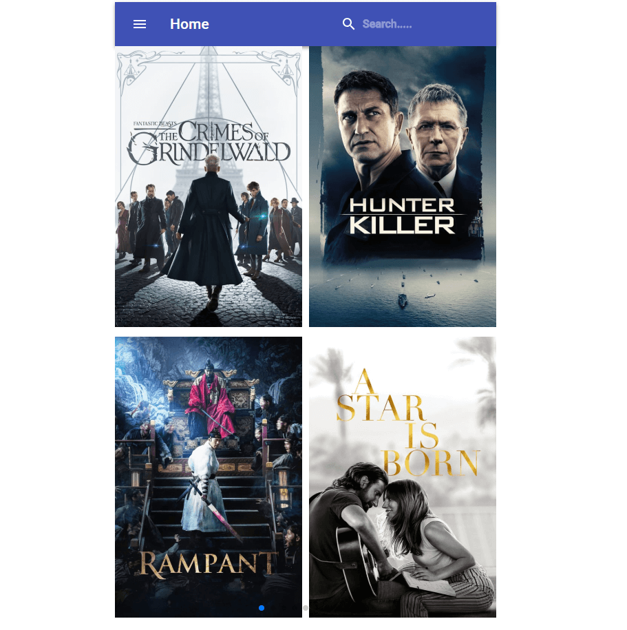
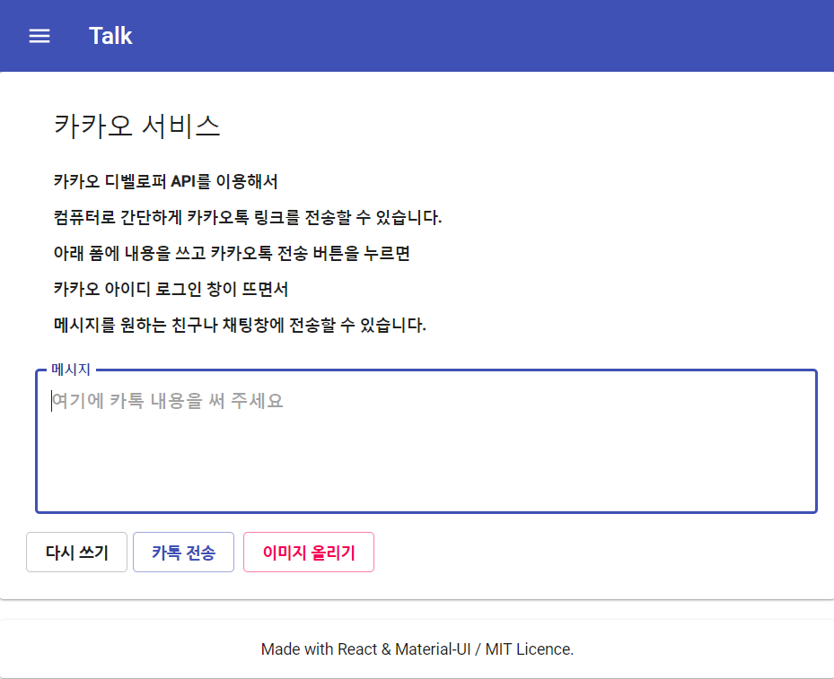

개인 프로젝트
My Movies
https://movies-cpro95.netlify.com
영화를 좋아해서 내 컴퓨터에 뭐가 있는지 정리할 필요를 느꼈는데
KODI DB를 통해 정리하기로 마음먹었어요.
이걸 웹상에서 구현할려고 생각했는데요.
백엔드는 Heroku에 REST API로 만들었구요.
프론트엔드는 리액트 Material-UI로 만들었구요.
최신 상영일 기준으로 정렬했습니다.

카카오톡 웹에서 간단히 보내기
https://kakao-cpro95.netlify.com
회사에서는 보통 카카오톡을 막아 놓습니다.
그런데 업무의 50% 이상이 카톡으로 이루어 지고 있는 요즘 상황에서
내 컴퓨터의 간단한 이미지를 핸드폰으로 옮길려면 이메일로 보낼 수 밖에 없죠.
이게 너무 귀찮았어요!!
그래서 KAKAO DEVELOPER 가입해서 간단히 만들어 봤습니다.
간단한 텍스트와 이미지를 보낼 수 있어 일할 때 조금 편하네요.

